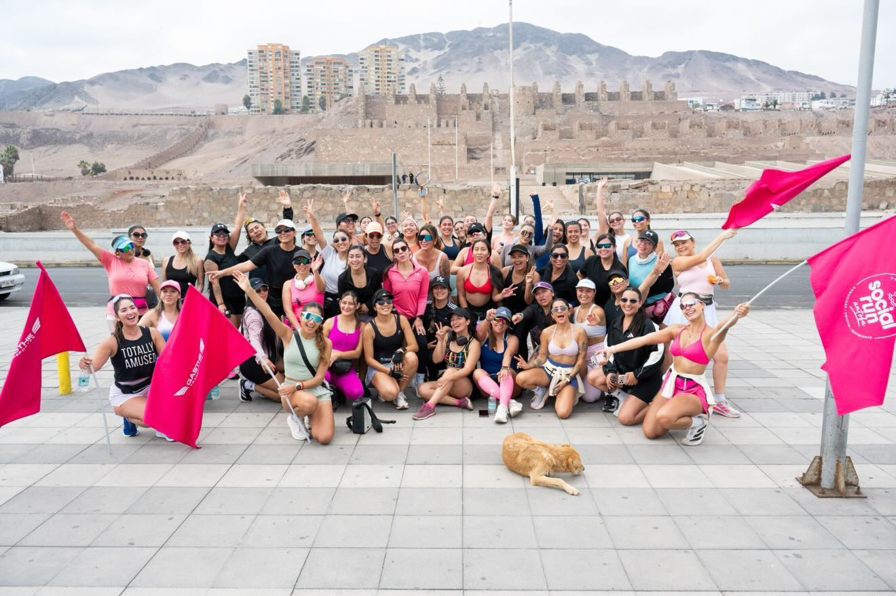

Por Social Run Antofa · 3 min de lectura
Si estás leyendo esto, ya diste el primer paso. Ir a correr con un grupo que no conoces da nervios, nos pasó a todas. Acá te contamos cómo es un social run para que llegues tranquila y con ganas.
Primero, mira la fecha
Nos juntamos casi todos los fines de semana. Cada social run lo publicamos en nuestro Instagram, @socialrun.antofa, con el día, la hora y el link para inscribirte. Inscribirte nos ayuda a saber cuántas vamos a ser.
Dónde nos juntamos
En el borde costero, en el punto de siempre, entre el Balneario Municipal y el Parque Las Almejas.
Llega unos 15 minutos antes. Así alcanzas a conocer a las chicas, dejar tus cosas tranquila y hacer el calentamiento con el grupo. Desde ahí corremos frente al mar. Si quieres ver por dónde vamos y cuánto mide cada tramo, mira nuestra ruta frente al mar.
Qué llevar
- Zapatillas para correr. No tienen que ser nuevas ni caras, solo cómodas.
- Ropa cómoda. La que uses para hacer deporte. Si quieres, algo rosado.
- Agua. Toma antes de salir y lleva una botella para después.
- Bloqueador. El sol de Antofa no perdona, aunque esté nublado. Un jockey y lentes de sol también ayudan.
- Lo justo. Llaves y celular en un banano o en un bolsillo con cierre, para correr liviana.
Y si soy lenta?
Vamos a 7 minutos por kilómetro, un ritmo en el que se puede conversar. Por lo general hay dos distancias, 3K y 5K, así que puedes partir por la corta. Y si en algún momento necesitas caminar, caminas. Eso también es parte de empezar.
Lo importante es que vengas. El ritmo se va dando solo, corrida a corrida.
Puedo ir sola?
Sí, y muchas llegan así. Ven sola o con tu partner, acá te vas a encontrar con muchas más. Nuestros social runs son para mujeres, y si tienes niños pequeños los puedes traer sin problema.
Cuánto cuesta?
La mayoría de los social runs son gratis. Algunos especiales tienen un valor de adhesión, y eso siempre lo avisamos en la publicación.
Te esperamos
Revisa nuestro Instagram, elige tu fecha y ven. La primera vez es la más difícil, después vas a querer volver.
Ver el próximo social run